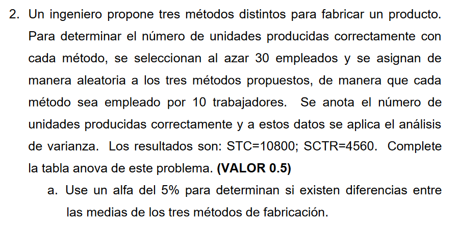
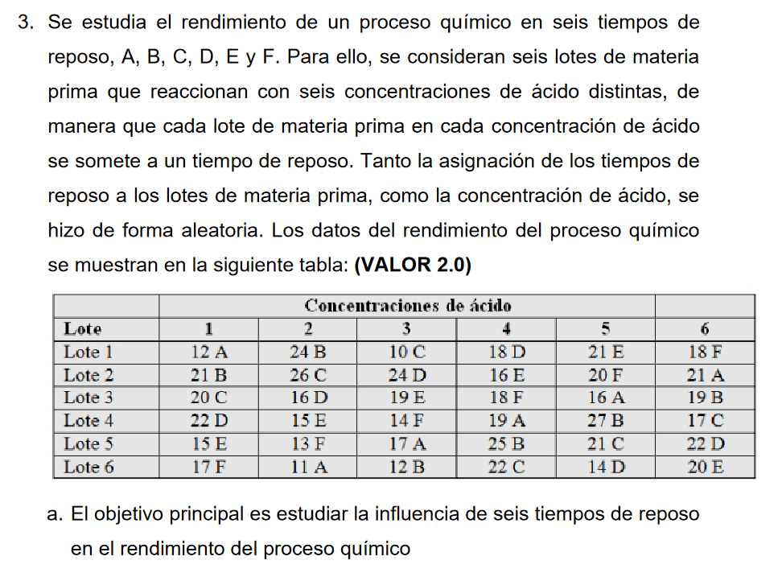

Para poder calcularlo se necesita conocer la varianza de las muestras de cada proporción de algodón en las telas
Porcentaje de algodón
15%
20%
25%
30%
35%
Media
9.8
15.4
17.6
21.6
10.8
Varianza
8.96
7.84
3.44
5.44
6.56
Para el calculo de la varianza se ha usado la función VAR.P(valor) de excel
Una vez con la tabla se puede hacer el calculo
Ya que en todos los casos se tomaron nj muestras, se saca el nj−1 como factor común; como nj=5; entonces nj−1=4
sce=4∗[8.96+7.84+3.44+5.44+6.56]
sce=128.96
Una vez se calcula el sce se puede calcular el cme, donde nT=25 y k=5
cme=nT−ksce
cme=25−5128.96
cme=6.448
Una vez calculados los datos preliminares, se puede analizar la hipotesis
Plantenado las hipotesis:
H0:μ15=μ20=μ25=μ30=μ35
H1:μ15=μ20=μ25=μ30=μ35
Planteamos el alpa:
α=0.05
Se calcula el valor del estadistico de prueba F
F=cmecmtr
Ya que cmtr=118.94 y cme=6.448
Fcalculado=6.448118.94
Fcalculado=18.44602978
Para calcular el valor de Fcritico se puede usar excel
INV.F.CD(alpha; k - 1; n_T - k)
Donde:
alpha=0.05
nT=25
k=5
Por tanto:
INV.F.CD(0.05; 4; 25 - 5)
Fcritico=2.866081402
Se plantea la afirmación
Fcalculado>Fcritico
Respuesta:
∴18.44602978>2.866081402 por lo que se rechaza la hipotesis H0; es decir; el porcentaje de algodón en la tela si es un dato significitivo para lo que busca el ingeniero
Solución 1.b: Intervalo de confianza
Para calculas los intervalos se puede usar la formula
μ=xˉi±t2α∗njS
Pero para hacer uso de esta se ha de calcular S, para este proposito se usa:
Recordar que cme=6.448
S=cme
S=6.448
S=2.53929124
Otro dato útil será el valor crítico de la distribución t de Student; para esto se determina que:
Los grados de libertad entre grupos: glg=k−1→glg=4
Los grados de libertad dentro de grupos: gld=nT−k→gld=20
Los grados de libertad totales: glt=nT−1→glt=24
Con estos datos se puede determinar el valor de t para las muestras y para la media de muestras; para ello se puede usar
DISTR.T.INV(2 * alpha; valor)
Para las muestras sería:
DISTR.T.INV(2 * 0.05; 5 - 1)
tmuestral=2.131846786
tmedia=1.71088208
Por lo que simplificando un poco:
μ=xˉi±2.131846786∗52.53929124
Intervalos
Intervalo para 15% de algodón en la tela se puede calcula como:
μ=9.8±2.420937075
μ1=9.8+2.420937075
μ1=12.22093707
μ2=9.8−2.420937075
μ2=7.379062925
Intervalo para 20% de algodón en la tela se puede calcula como:
μ=15.4±2.420937075
μ1=15.4+2.420937075
μ1=17.82093707
μ2=15.4−2.420937075
μ2=12.97906293
Intervalo para 25% de algodón en la tela se puede calcula como:
μ=17.6±2.420937075
μ1=17.6+2.420937075
μ1=20.02093707
μ2=17.6−2.420937075
μ2=15.17906293
Intervalo para 30% de algodón en la tela se puede calcula como:
μ=21.6±2.420937075
μ1=21.6+2.420937075
μ1=24.02093707
μ2=21.6−2.420937075
μ2=19.17906293
Intervalo para 35% de algodón en la tela se puede calcula como:
μ=10.8±2.420937075
μ1=10.8+2.420937075
μ1=13.22093707
μ2=10.8−2.420937075
μ2=8.379062925
Tabla de intervalos
15%
20%
25%
30%
35%
Punto B
12.22093707
17.82093707
20.02093707
24.02093707
13.22093707
Punto A
7.379062925
12.97906293
15.17906293
19.17906293
8.379062925

Tabla ANOVA
Datos preliminares:
k=3
nT=30
α=0.05
Fuente
suma de cuadrados
Grados de libertad
Cuadrados medios
Estadistico F
F crititco
Valor P
Tratamientos
4560
2
2280
9.865384615
3.354130829
0.000539043
Error
6240
27
231.1111111
Total
10800
29
Solución 2.a
∴9.865384615 > 3.354130829 se rechaza la hipotesis H0, lo que indica que hay una diferencia significativa entre los métodos propuestos

Solución 3.a
El primer paso será re ordenar los datos
Tomando los datos preliminares
A=6
B=6
n=36
Una vez se tiene los datos preliminares y la tabla ordenada podemos calcular la media de los datos
Con la media de los datos podemos facilmente calcular los cuadrados de cada factor
Para el factor A que corresponde con el tiempo de los quimicos podemos usar:
∴1.413159297>2.485143221 por lo que se rechaza la hipotesis H1; es decir; estadisticamente hablando con un seguridad del 95% se puede afirmar que no existe una diferencia signicativa entre los tiempos de respose A, B, C, D, E y F
Solución
Tomando los datos preliminares
α=5%
α=0.05
k=4
n=12
Plantenado las hipotesis:
H0:αi=0
H1:αi=0
La hipotesis se ha de centrar en el factor A (El detergente), no tendría sentido centrarse en las manchas
Planteamos el alpa:
α=0.05
Se calcula el valor del estadistico de prueba F
Para este proposito podemos usar la tabla ANOVA
Fuente
Suma de cuadrados
Grados de libertad
Cuadrados medios
Estadistico F
F critico
Valor P
Factor A
SCA
GLA=a−1
MCA=a−1SCA
Fobjetivo=MCEMCA
INV.F.CD
DISTR.F
Factor B
SCB
GLB=b−1
MCB=b−1SCB
Error
SCE
GLE=(a−1)∗(b−1)
MCE=(a−1)∗(b−1)SCE
Total
SCT
GLT=ab−1
Para poder llenar la tabla se han de calcular algunos datos empezando por la media de los datos
Con la media de los datos podemos facilmente calcular los cuadrados de cada factor
Para el factor A que corresponde con el tiempo de los quimicos podemos usar:
Para el factor B similar al factor A podemos usar:
SCB=a∗i=1∑byiˉ2−n∗yˉ2
SCB=4∗(45.52+442+51.752)−12∗47.083333332
SCB=135.1666667
Otro dato que se puede calcular es el total o SCT, para esto usamos:
SCT=i=1∑ai=1∑byijˉ2−n∗yˉ2
SCT=26867−12∗47.083333332
SCT=264.9166667
Con estos valores se puede calcular el SCE:
SCE=SCT−(SCA+SCB)
SCE=264.9166667−(110.9166667+135.1666667)
SCE=18.83333333
Tabla ANOVA
Fuente
Suma de cuadrados
Grados de libertad
Cuadrados medios
Estadistico F
F critico
Valor P
Factor A
110.9166667
3
36.97222222
11.77876106
0.984430722
0.000926591
Factor B
135.1666667
2
67.58333333
Error
18.83333333
6
3.138888889
Total
264.9166667
11
Se plantea la afirmación
Fcalculado>Fcritico
11.77876106>0.984430722
Respuesta:
∴11.77876106>0.984430722 por lo que se rechaza la hipotesis H0; es decir; estadisticamente hablando con un seguridad del 95% se puede afirmar que entre los 4 detergentes hay una diferencia